Palinopsia · Opsia · a visual instrument
Palinopsia is a WebGL2 compositor you perform, not a tool you wire. It stacks layers of generated and treated video, masters the whole picture through a fixed set of stages, and lets you steer every parameter live: by hand, by an internal modulation brain, over OSC and MIDI, from the other instruments of a dataflou mesh, or with your own body.
Free and open source, for Windows, macOS and Linux. The name is the persistence of a visual image after the stimulus is gone.
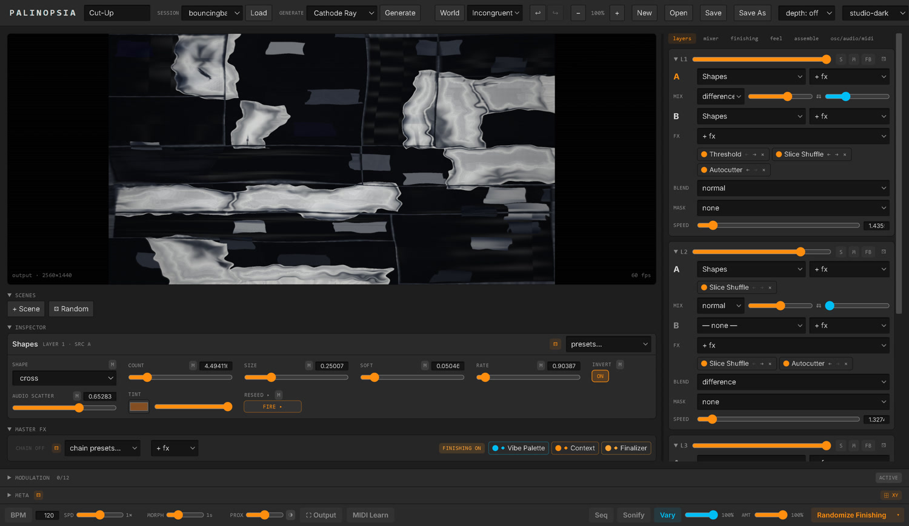
The latest release for every platform. Built by CI, unsigned for now.
Windows
Installer (.exe) or a portable single file. x64.
Get the latest ↗SmartScreen may warn on an unsigned build: More info → Run anyway.
macOS
A .dmg for Apple Silicon (arm64). On an Intel Mac, build it from source.
Get the latest ↗Not notarized: drag Palinopsia into Applications first, then run xattr -cr /Applications/Palinopsia.app once in Terminal (or open it, then System Settings → Privacy & Security → Open Anyway).
Every frame below was built by the app alone, no external footage. Pick a recipe from Generate and it composes the whole session for you.
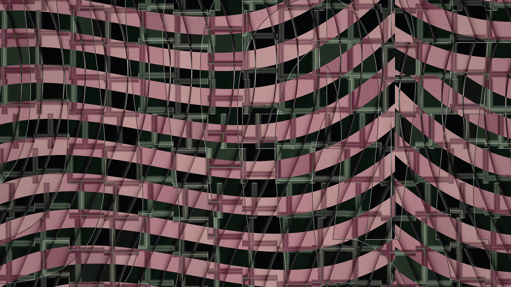
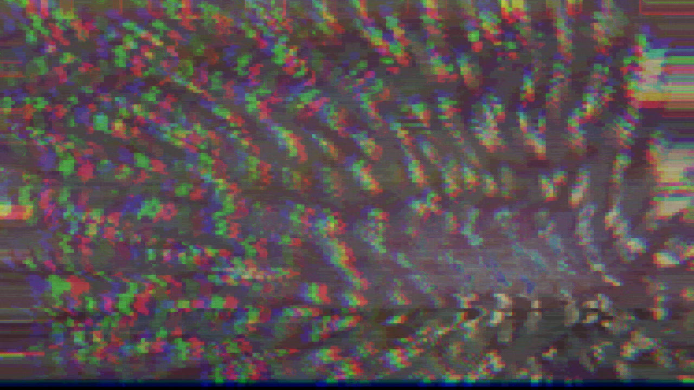
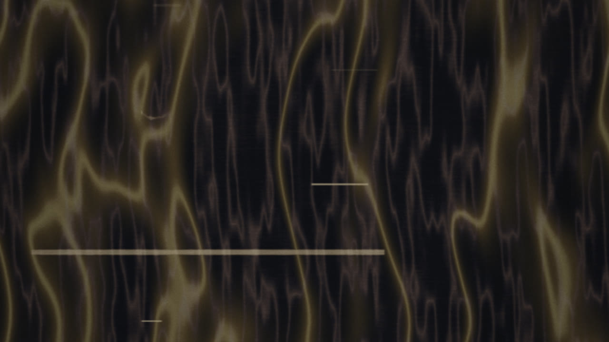
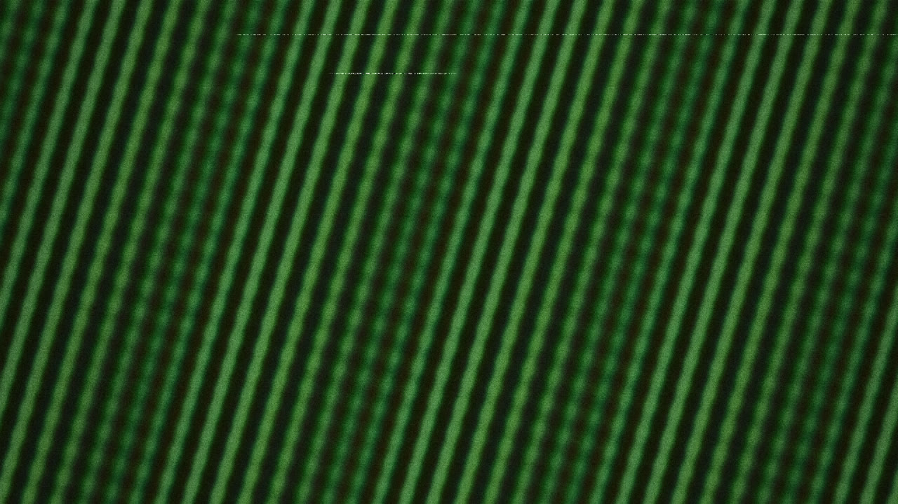
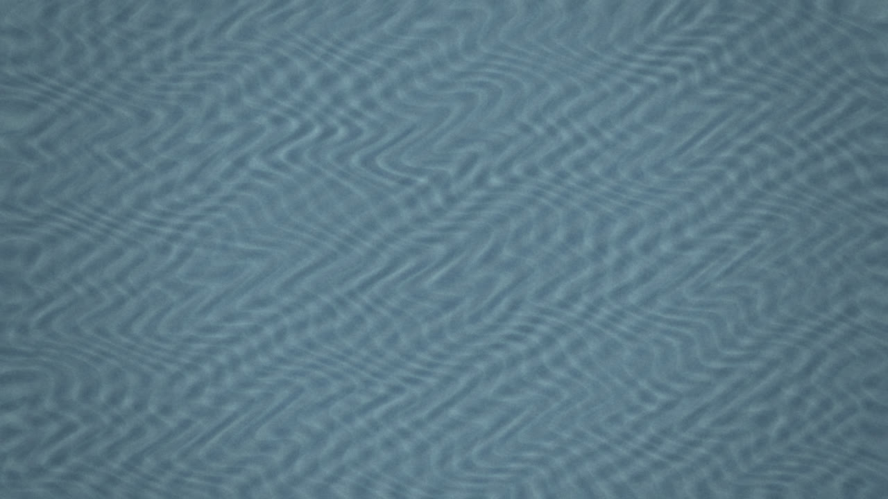
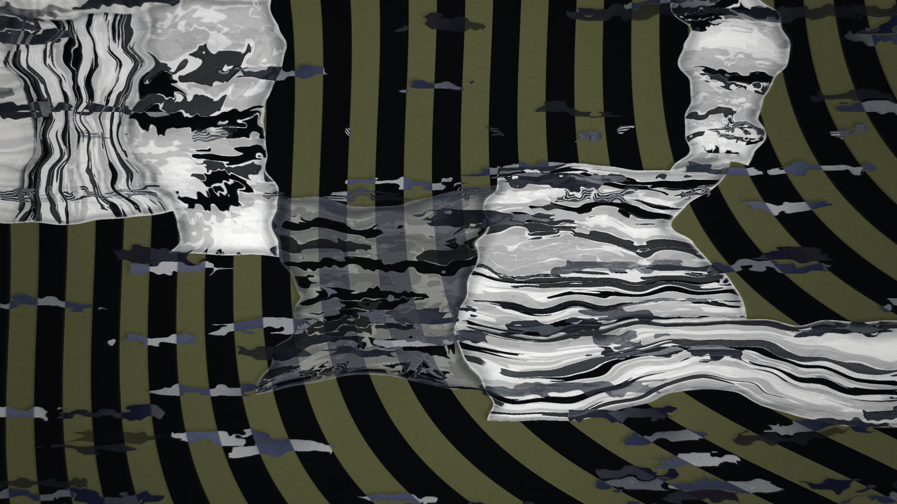
Data and rhythm. A source of machine-cut marks, a sound voice that reads the picture as data, a Vary for every layer, and the readout that used to stall the frame rate made free.
The full list is in the release notes.
The dome and the grain. The biggest release yet: the picture goes under a dome and over the network, the camera reads movement, the sound gets a key of its own, and every change now morphs.
The full list is in the release notes.
Palinopsia is one instrument with several rooms. Each is a full-page mode reached by a single key.
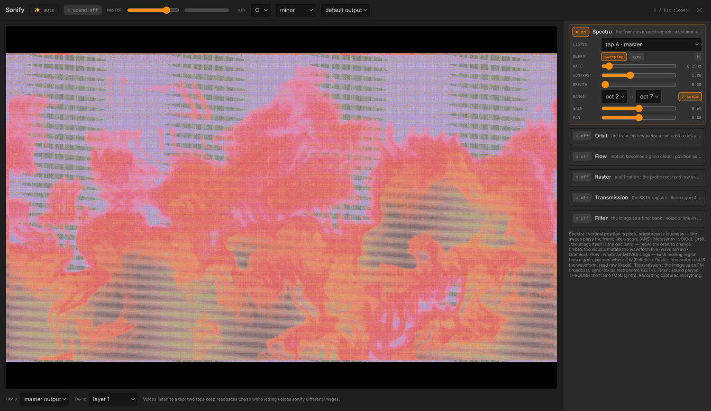
The image itself synthesizes audio in real time, inside the app, no external software. Ten voices (a scanning spectrogram, the frame as an oscillator, grain clouds off motion, struck edges, raster audification, SSTV, resonant filters, read heads that play the picture as data, a chord bank, and a Collage's own films heard as a tuned sound collage through a Ring bank inspired by the S-4) with a shared reverb/delay tail, an effects sequencer, and a key sequencer that composes the key of the whole instrument over time.
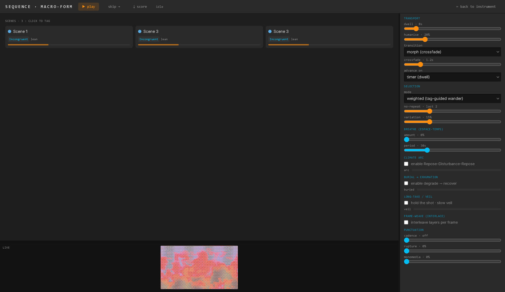
An auto-pilot over your scene bank. Tag each scene, then let it wander: weighted or climate-shaped selection, morph or cut transitions, and slow durational long-forms (Burial, Long-Take, Frame-Weave) that reshape the whole run over minutes.
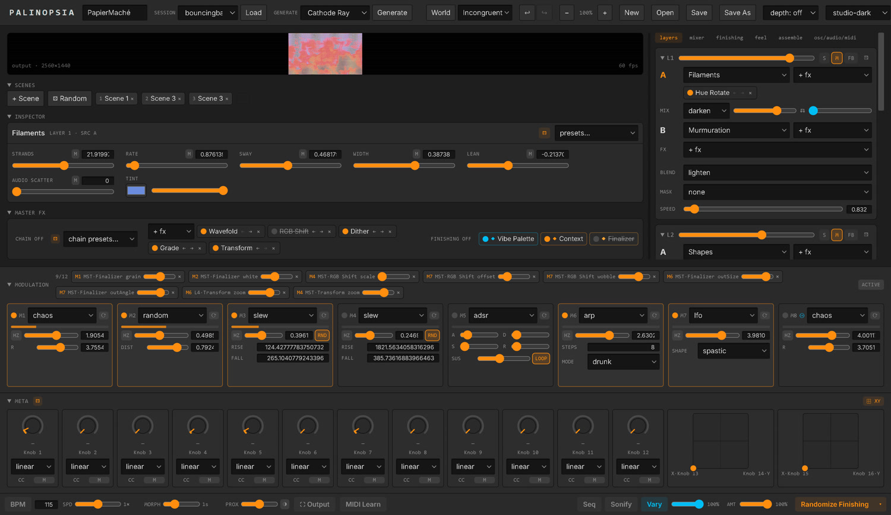
Eight modulators (LFOs, envelopes, chaos, Euclidean and Turing patterns, audio and vision followers, a body follower) and sixteen meta knobs write on top of your values every frame. Dial a value by hand, then let a shape move it. Everything answers to MIDI Learn and OSC too.
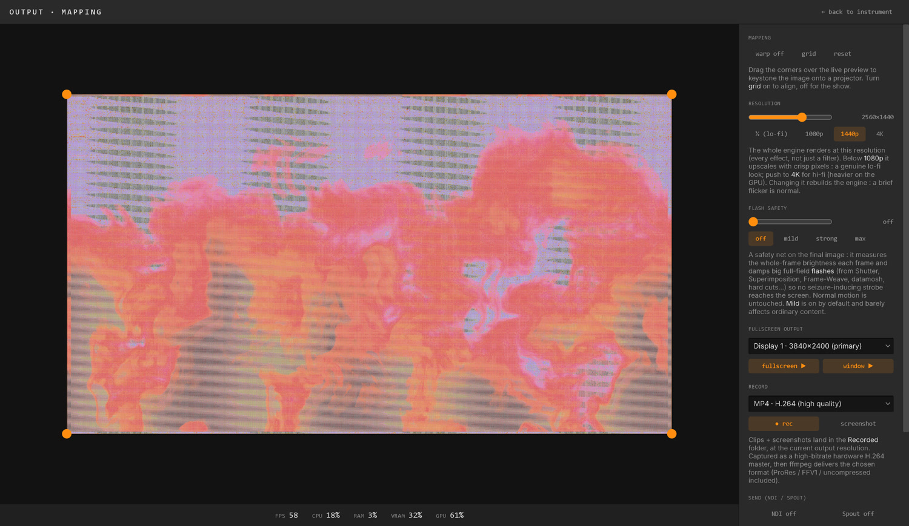
Fullscreen to any display, projection-map with a keystone editor, and record the take in real time, DXV3 included (it keeps rolling when you leave the page). Send over NDI, Spout, Syphon or HIVE (and play any NDI source on the network as a layer), go under a fulldome with a 3D simulator, span a custom composition across several projectors, run it as a self-healing installation, and push the picture's color into the room over DMX / WLED, all behind a built-in flash-safety limiter.
Open a Resolume composition and its layers, clips, effects and dashboard become columns of a pin board whose rows are Palinopsia's signals: modulators, Meta knobs, the audio, picture and body features, any OSC address. Click to connect, set an amount, smooth it, and recall scenes as Resolume columns. 8 snapshots, a lock, and a dice for happy accidents.
Turn on the dataflou section of the audio/midi/osc tab and Palinopsia becomes a node of the mesh its sibling instruments speak. Nodes on the network find each other on their own, show what they publish and what they take, and wire any source to any destination, both ways. Palinopsia shares what it senses (sound, picture, body, modulators) and takes Meta knobs, layers, the feel macros, scenes and tempo.
Body B reads the room: turn a webcam on (opt-in) and MediaPipe reads your hands, pose, face and silhouette into the instrument. Route any tracked feature, any movement quality or the motion field into a modulator, or author gesture rules that fire actions and OSC: cover a screen zone with your shadow, or trigger on presence when someone walks into frame. Assemble E is a concatenative video editor: point it at a folder of films and it edits a matching sequence live, as a layer source. And Collage is a source: a wall of films cut up like torn paper, every piece its own film, that you can modulate, run through effects and hear in Sonify.
A few ideas that make everything else click into place.
That is the instrument. The long list of sources, effects and nodes is vocabulary you learn over time. The shape of the thing does not change.
Get sound out of it?
Press S for Sonify. The image itself synthesizes audio in real time, inside the app, no external software. The probes you see drawn on the picture are the instrument.
Make a collage of my films?
Pick Collage as a layer source and open a folder in the Inspector: every piece plays its own film. Bind a modulator to cuts and the wall grows and shrinks a piece at a time; turn on FX before shapes to run the source's effects on the films while the seams and torn paper stay crisp; and turn on Sonify's Collage voice to hear them, tuned to your key.
Move an effect from a layer to the master?
Drag its chip onto the other rack (hold Ctrl to copy instead), or right-click it for Copy to Master FX / Copy to Layer N FX. Its modulation follows a move. A rack that can't host an effect says why.
Change scenes or sessions during a show without a jump?
Set the Morph time in the transport. Scene recalls, Randomize, the sequencer, loading a session, New and Generate all move into the next composition over that time, live: the same sources ease their every value, anything else crossfades layer by layer, and a new layer only fades in once it is ready. At Morph 0 a session holds the picture still while it compiles, then dissolves.
Use a MIDI controller?
Press L to arm MIDI Learn from anywhere, click a control (it pulses), then move a knob or hit a pad. It stays armed, so you can map the next control right away.
Play it with my body?
Press B for Body. Turn a webcam on (opt-in, off by default) and MediaPipe reads your hands, pose, face and silhouette: route any tracked feature into a modulator, or author gesture rules that fire actions and OSC. Cover a screen zone with your shadow to trigger it, or fire on presence (someone walking into or out of frame) for an installation.
Drive it from another app?
Every parameter is an OSC endpoint (advertised over OSCQuery), so a companion brain like dataFLOU or hardware like Pandore can play the whole instrument. The picture also streams back out over OSC, so the image can answer the sound. The OSC monitor shows every message both ways, live.
Wire it to my other instruments on the network?
Turn on the dataflou section in the audio/midi/osc tab (pick a name and a universe). Every dataflou node on the network appears there with its parameters: wire one of theirs to Palinopsia, or Palinopsia's sound, picture or body features to one of theirs, and watch every connection on the mesh. Wires come back on their own when a node reappears.
Drive Resolume with it?
Press K for the Resolume mapper, open your composition (.avc), and pin Palinopsia's signals to Resolume's controls. Turn on OSC input in Resolume's preferences; the Resolume section of the audio/midi/osc tab says when it is sending.
Project in a dome?
On the Output page, turn on Fulldome: Palinopsia renders a square domemaster (front at the bottom), fits a flat picture as full dome, panorama or screen, and shows it in a 3D dome simulator. Everything downstream (projector, NDI, Spout, Syphon, recording) gets the dome.
Go fullscreen or record a take?
Press O for the Output page: pick a display, set the resolution, and record (DXV3 records in real time, even the 4096² dome master). The take keeps rolling if you leave the page, so you can tweak parameters mid-recording, and it carries the Sonify sound when it plays.
Undo a mistake, or calm a runaway feedback?
Ctrl+Z / Ctrl+Shift+Z undo up to 100 steps. Press 0 to flush every self-feeding buffer at once, or H to freeze the output on the current frame while you sort things out.
When you want the full vocabulary (42 sources, 52 effects, 25 native nodes, the modulation matrix, the sequencers, the Sonify voices and the dataflou mesh), read the complete README, and the 1.2.5 release notes for what changed. To drive Palinopsia from any OSC brain, see the OSC reference. The whole instrument is reachable over OSC, MIDI or the interface, through one write path.